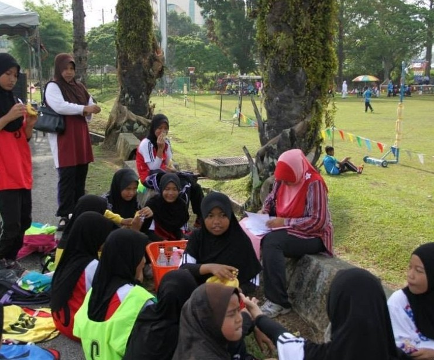

My Education Journey🎓
🎓 2012 - 2017
SK Tanjong Rambutan
↓
📚 2018 - 2022
SMK Ulu Kinta
↓
🎓 2023 - 2026
UiTM Rembau
🏫 PRIMARY SCHOOL
SK Tanjong Rambutan
My primary school journey was the start of everything. It was simple, fun and full of little moments. I completed my primary education at SK Tanjong Rambutan.
During my time there, I was a Pengawas Pusat Sumber, where I enjoy help teachers in manage the school library. Looking back, those were some of the purest and happiest days of my life.



🏫 HIGH SCHOOL
SMK Ulu Kinta
My high school journey was one of the most meaningful chapters of my life. I went through a lot of ups and downs, but those moments shapes who I am today.
The best chapter of my life was meeting the friends I have right now. Everything felt easier with them around - laughing, growing and creating memorise without even realizing it at the time.
On my silent days, I still miss that one circle of friends that made my school life fun and memorable <𝟑
🏫 UNIVERSITY
UiTM Rembau, Negeri Sembilan
In my university experience, I've learned a lot, especially about friendship. I'm really grateful to have friends who are always there for me through everything.
Right now, we only have about two weeks left together before our five-semester journey comes to an end. A part of me feels sad knowing things are changing, but another part of me is just really thankful that I got to experience all of this with them. I know that people come and go, but I hope we stay friends until we grow old 🫶🏻
We never really noticed we were creating memories, we just knew we were having fun :)


Be the Beauty. Be the Brain. #prettygirlsstudyhard 🌸
♡ Continue the Journey ♡
There's more to discover about me. Click next to continue exploring! 🌷